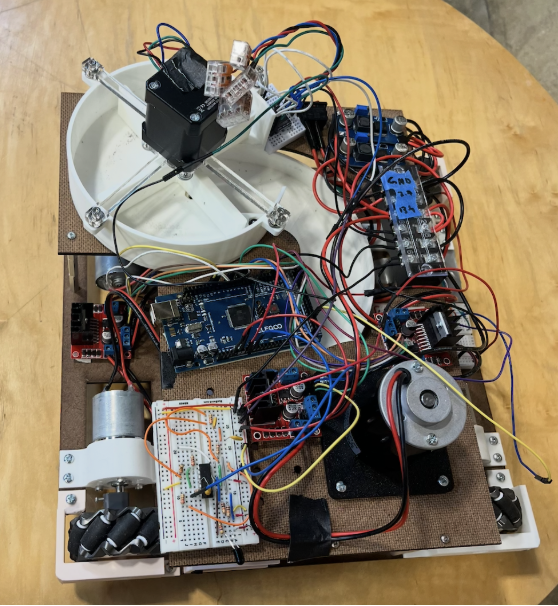
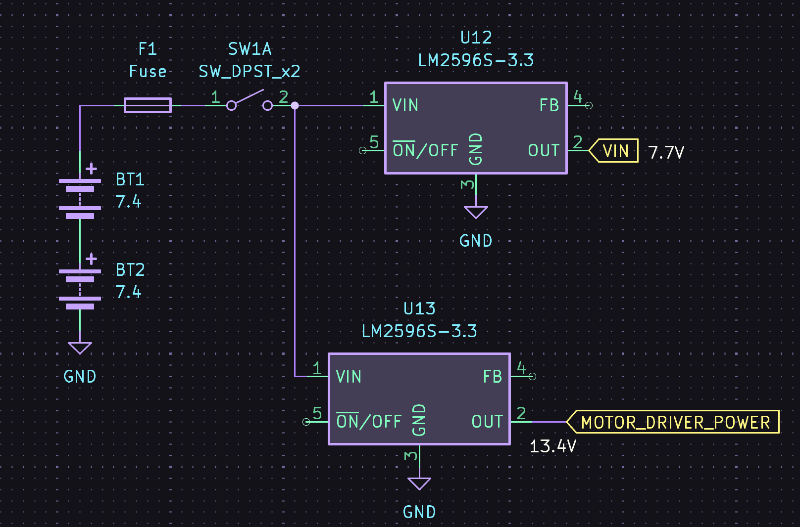
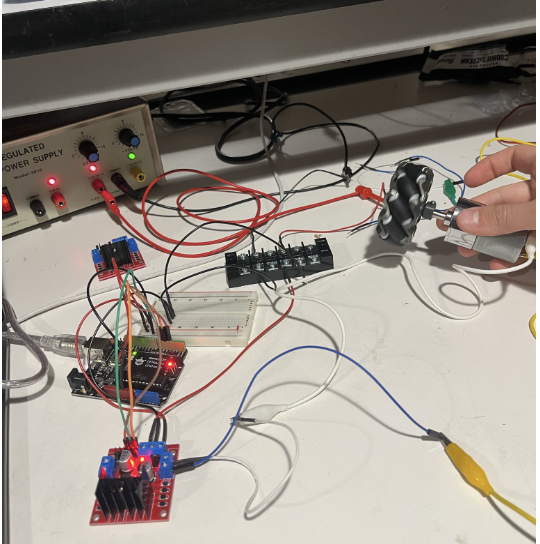
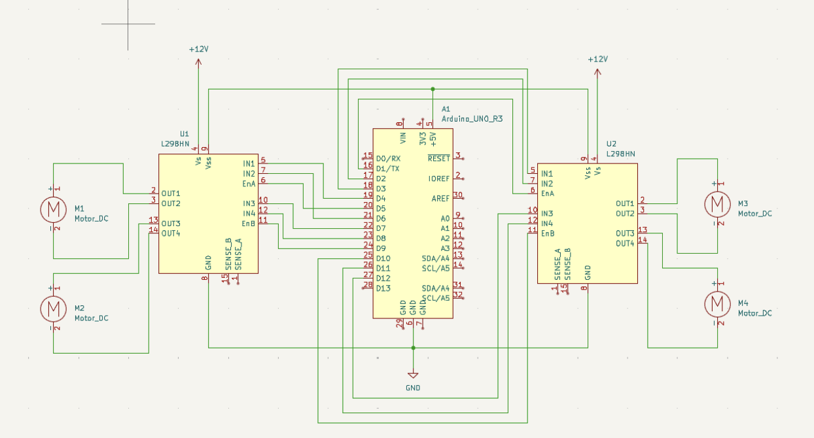
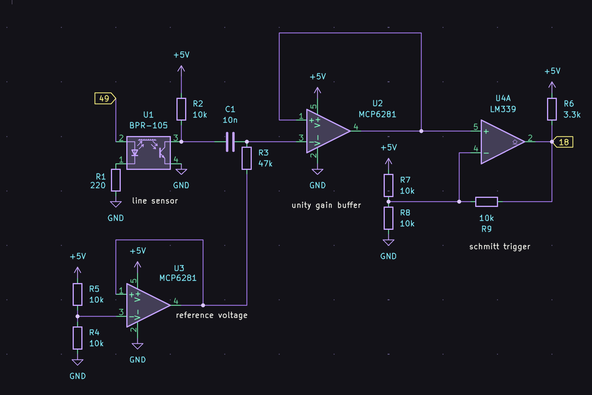
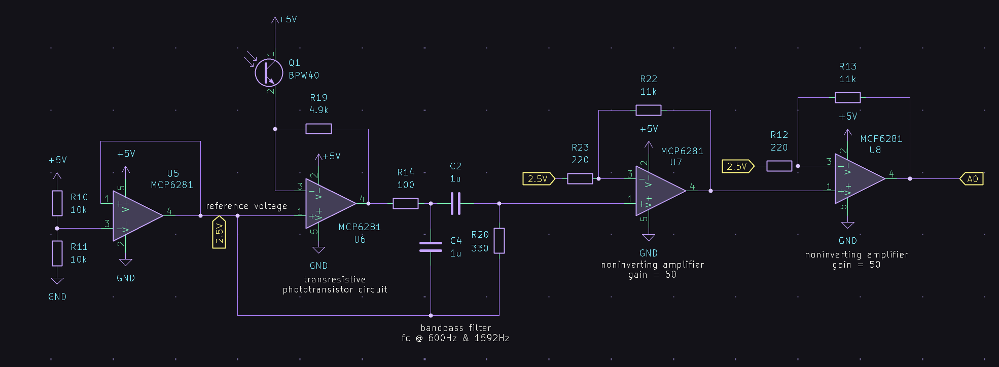

We used an Arduino Mega to control the drivetrain and sensing since a single Arduino Uno could not afford enough pins and simultaneously controlling multiple Arduino Unos proved unnecessarily difficult.

We used two 7.2V NiMH rechargeable battery packs connected in series. This was then connected to a 5A fuse and a switch to turn on the entire robot, and then to 2 voltage step-down regulators (LM2596S) which outputted 7.7V to the Arduino Mega and 13.4V to the motor drivers (since the L298 motor drivers have a 1V drop internally and we needed to run the motors at 12V).

We used two L298 dual-full bridge drivers to drive our motors for the wheels and another L298 to drive the flywheel motor. These were controlled by PWM pulses from the Arduino Mega. For the puck reloader stepper motor, we used a Nema17 stepper motor and the DRV8825 stepper driver.


Our robot detects the black line on the ground through a conditioning circuit that filters out sunlight (DC) with a high-pass filter and uses Schmitt trigger hysteresis to account for noise.

line detection works!
Our robot detects the IR beacons by rotating the robot and detecting a spike in the voltage input, which represents the signal from the IR beacon. We built a filtering circuit that detects this signal which includes an amplifier, a bandpass filter to remove extraneous frequencies with a peak frequency at 909Hz, and two cascaded non-inverting amplifiers to amplify the small signal from the phototransistor. For the bandpass filter, we cascaded a lowpass and a highpass filter.
Through testing, we set the threshold amplitude of the signal to be 2.1V. If the signal the Arduino pin reads is greater than 2.1V, we know the robot is facing in the direction of an IR beacon.
